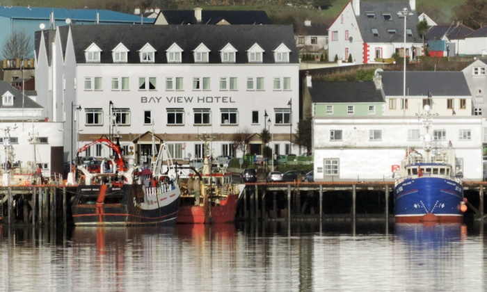
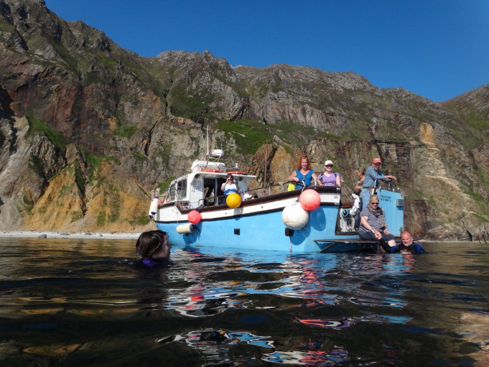
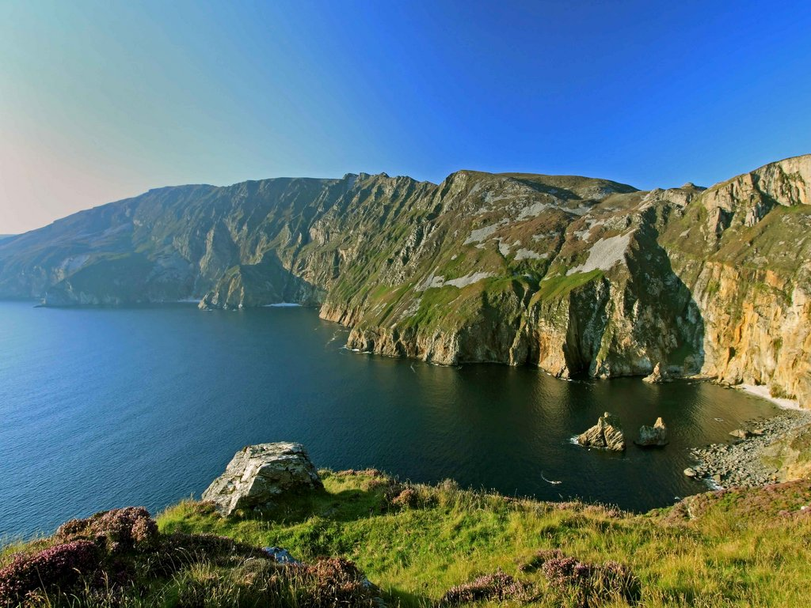
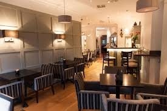

Located at the edge of Ireland’s premier fishing port in the heart of Killybegs town. Steeped in history, Killybegs is famous for a warm Donegal welcome and the Bay View Hotel is the longest serving accommodation provider in the local area. With close proximity to some of the most iconic tourism attractions on the Wild Atlantic Way, the Bay View Hotel is the perfect base for exploring stunning South West Donegal and surrounding areas. With breath taking views of the bay and the harbour, their Superior rooms offer an authentic relaxing ambience and the opportunity to relax and unwind and capture time go by.
The Sliabh Liag cliffs, these majestic sea cliffs are amongst the highest in Europe and offer breathtaking panoramic views across the horizon overlooking Donegal Bay.On the Sliabh Liag Boat Trip you can see the cliifs from the sea, a unique view. AAfter Sliabh Liag continue the journey along this inspirational touring route of Ireland and stop off in Glencolumbkille where you can enjoy the Folk Village that offers a glimpse of life in Ireland many years ago. Silver Strand is a stunning beach at Malin Beg just 7km from Glencolumbkille, a long strand of golden sandy beach, perfect for walking, watersports and relaxation.
Don’t miss your opportunity to visit one of Ireland’s best kept secrets and a signature point on the Wild Atlantic Way. Located in south west Donegal along this magnificent costal driving route are Ireland’s highest Sea Cliffs, Sliabh Liag. A visit to the cliffs and the surrounding region is a must on your Wild Atlantic Way adventure. Experience the local culture, heritage and people of Donegal against the backdrop of our spectacular and rugged coastline.
The first of its kind, this establishment gives a new meaning to 'eating in style'. With its elegantly furnished interior, two spacious bars and ambient atmosphere, everyone will feel at home in this little corner of Italy down by the river. The latest addition to the La Bella Donna experience is our Bellini Cocktail Bar. Located above the main restaurant, the bar offers views of the beautiful River Eske and Donegal Bay. With a wide range on the menu.
